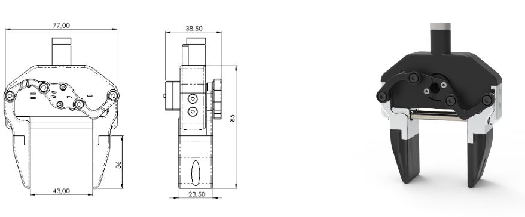
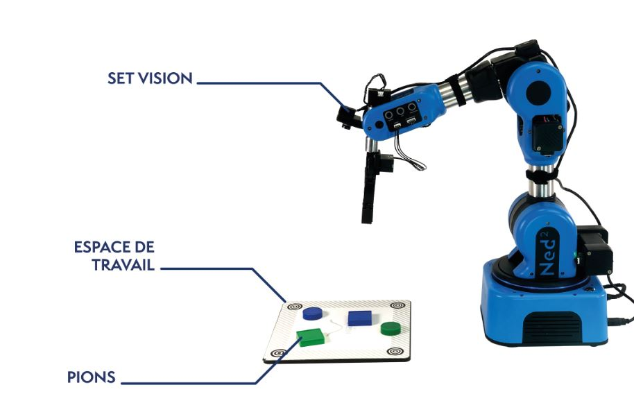

Robot Niryo Ned2
Ned2 est un bras robot collaboratif six(6) axes, basé sur des technologies open-source. Il est conçu pour l'éducation, la recherche et industrie 4.0. Avec un poids utile de 300g et une portée maximale de 440 mm, Ned2 a une repetabilité de 0.5 mm et d'une precision de l'ordre de 0.5mm. Son architectecture logicielle est basée sur le middleware ROS et des environnements de programmation tels que : NiryoStudio2, Pyniryo2 etc...
Description du robot Ned2 et son kit vision
La partie manipulation est constituer de :
- Un bras Ned2
- Une pince: Le prehenseur est une pince personnalisée. Ces caracteristiques sont:
| Paramètres | Description |
|---|---|
| Ouverture maximale | 43 mm |
| Distance de l’objet attrapé par rapport à la base de l’outil | 85 mm |
| Poids utile | 300g |

Pour monter la pince sur le bras, veuiller suivre la documention - Un kit vision (camera, une pointe de calibration et accessoires)
Ned2 avec kit vision: 
Ned2 est basé sur Ubuntu 18.04 et ROS Melodic et bénéficie des capacités d’une Raspberry PI 4, d’un processeur hautes-performaces 64-bit ARM V8 et de 4gb de RAM. Ned2 dispose d’un ensemble de librairies permettant de concevoir des programmes.
PC fixe de travail
Vous travaillerez sur le même PC. Avant toute manipulation du robot, veuillez lire attentivement les consignes de securité
NiryoStudio
En utilisant l'application NiryoStudio déjà installée sur votre PC fixe, vous pouvez contrôle le NED2.
Connexion au robot
Il existe plusieurs façons de connecter votre ordinateur au robot :
- Mode Hotspot: Si vous êtes directement connecté sur la wifi du robot, l’Adresse IP que vous devrez utiliser est 10.10.10.10
- Connexion Ethernet: Connecter au robot avec l'adressse IP qui est sur le robot.
Installation de packages à l'aide de pip et virtualenv
Ned2 n'est pas compatible avec ROS2. Pour cela vous allez installer les dependances python du Ned2 dans un environnement virtuel.
Pour vérifier si virtualenv est installé, utilisez la commande suivante :
virtualenv --version
Si vous rencontrez une erreur comme celle-ci, cela signifie que virtualenv n'est pas installé :
bash: virtualenv: command not found
Pour installer virtualenv, utlisez les commandes suivantes : 1. installer python3-virtualenv
sudo apt update
sudo apt install python3-virtualenv
- Une fois virtualenv installé, vous pouvez créer votre environnement virtuel de de la façon suivante:
cd ~
mkdir -p ~/niryo_ws/src
cd ~/niryo_ws
virtualenv -p python3 ./venv
Si tout s'est bien passé, vous devriez maintenant avoir un environnement virtuel python dans le dossier ~/niryo_ws.
- Activer votre environnement virtuel avec la commande suivante :
source ./venv/bin/activate
Après activation votre environnement ressemblerait à ceci:
(venv) user:~/niryo_ws$
- Ignorer le dossier venv (environnement virtuel) lors de la compilation de votre espace de travail ros2
Afin de dire à ROS2 de ne pas prendre en compte votre dossier venv lors de la compilation de l'espace de travail,
créer un fichier nommé
COLCON_IGNOREdans le dossiervenv.
touch ~/niryo_ws/venv/COLCON_IGNORE
Installation du package pyniryo2:
La librairie utilise Python. Pour installer le package pyniryo2 avec pip, exécutez simplement:
python3 -m pip install pyniryo2
Compier votre espace de travail:
cd ~/niryo_ws
colcon build
Gardez à l'esprit que vous devez toujours activer l'environnement virtuel avant l'utiliser. Pour quitter/désactiver l'environnement virtuel, vous pouvez exécuter la commande suivante :
deactivate
Prise en main
Utilisez la documentation de l'API pyniryo2 pour connaitre les fonctionnalités de base du Ned2. Des tutoriels de prise en main du robot sont accessibles ici.
Tester votre premier programme en python
#!/usr/bin/env python3
from pyniryo2 import *
adr_IP= "10.10.10.10" # adresse IP de votre robot, utiliser votre IP
robot = NiryoRobot(adr_IP)
robot.arm.calibrate_auto()
robot.arm.move_joints([0.2, -0.3, 0.1, 0.0, 0.5, -0.8])
robot.end()
Connexion ssh
Dans le terminal,taper ssh niryo@<ip_address> avec mot de passe robotics
Connexion sur NiryoStudio
- Lancer NiryoStudio
- Entrer dans la partie
Guestle nom de votre groupeGroupeXavec x numéro de votre groupe - Entrer votre token( Ecrit sur votre PC)
- Clicker sur
Connect robotdans l'environnment - Entrer votre Adresse IP et connectez-vous au robot.
Démarrage du Ned2
- Allumer Ned2 en appuyant sur le bouton
marche/arret - Attendre une minute pour que le robot que le robot démarre en toute sécurité
- Se connecter au robot via NiryoStudio ou en ssh
Extinction du Ned2
- Appuyer sur le bouton
marche/arret - Attendre une minute pour que le robot d'éteigne en toute sécurité